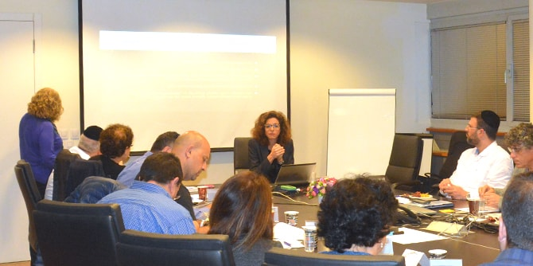

המפגש נפתח בהרצאתו של ד"ר גידי קפלן , בוגר מחזור י"ט של בית ספר מנדל למנהיגות חינוכית, שיפור חיזוי וקבלת החלטות בעזרת חשיבה הסתברותית. ההרצאה עסקה בשיפור תהליך קבלת החלטות על-פי חיזוי תוצאותיהן בהתבסס על נתונים סטטיסטיים. ד"ר קפלן ציין שחשיבה הסתברותית היא כלי עבודה שימושי בתהליכי קבלת החלטות, ושבתור דירקטורים לעתיד, כדאי לבוגרים להכירו.
אורי יוגב סיפר על מהפכת נבחרת הדירקטורים בחברות הממשלתיות שהוביל בשנים 2017-2013, תקופה שבה כיהן כראש רשות החברות הממשלתיות. יוגב הבהיר כי תפקודן התקין של החברות הממשלתיות חיוני למדינה ולאזרחיה, שכן הן כלי מרכזי למימוש יעדיה של המדינה: הן מרכזות חלק ניכר מניהול משאביה של המדינה ויש להן השפעה ישירה על יוקר המחיה ועל יעילות המשק. לדבריו, החברות הממשלתיות טרום הרפורמה סבלו ממשבר רווחיות (הפסדים בהיקף של כ-600 מיליון שקלים), חוסר יעילות, שירות לקוי, שחיתות ומִנהל לא תקין. הסיבה העיקרית למצב המדורדר של החברות הייתה מינויים של דירקטורים לא מקצועיים, חסרי ניסיון בניהול בכיר וחסרי מומחיות פיננסית. מטרת הרפורמה הייתה להפוך את החברות הממשלתיות למקצועיות, רווחיות, יעילות ונקיות משחיתות וממניעים זרים. ואכן, הרפורמה הביאה לידי שיפור דרמטי בתפקודן וברווחיותן של החברות הממשלתיות (מהפסד לרווח של מיליארדים), ונבחרת הדירקטורים הייתה המהלך המרכזי בהובלת שינוי זה.

יוגב דיבר גם על חוק החברות הממשלתיות, הקובע כי חברה ממשלתית תפעל על-פי מודל הפעולה של חברה לא ממשלתית. פירוש הדבר שהדירקטוריון צריך להיות מקצועי ומגוון, ועל הדירקטורים להיות מחויבים לטובת החברה בלבד, בעלי רקע ניהולי ופיננסי עשיר בתחום פעילות החברה, וכן עליהם להיות עצמאיים ובלתי תלויים. יוגב דן בהליך מינוי הדירקטורים בחברות הממשלתיות והבהיר את הקריטריונים, את תהליך האיתור והמינוי ואת הפרופיל הרצוי של הדירקטוריון.
הרצאתו של רו"ח מוטי פרידמן, שותף ודירקטור בכמה חברות ומיזמים עסקיים בישראל ובחו"ל, עסקה בהתנהלותו של הדירקטוריון במרחב הכאוטי והרב-ממדי הנגזר מתפקידיו, מסמכויותיו ומאחריותו האסטרטגית. פרידמן ציין כי החוק מטיל על הדירקטוריון להתוות את אסטרטגיית הארגון, אף שבפועל דירקטורים רבים לא התנסו בתהליכים אסטרטגיים ואין להם הניסיון והידע הנדרשים כדי לממש את אחריותם המרכזית. פרידמן הבהיר את הצורך להתוות מדיניות ותוכנית אסטרטגית המבוססות על חזון, לגבש מטרות הנגזרות ממנו ולמפות את המצב הקיים. הוא דיבר על מיקום הדירקטוריון בהיררכיה הארגונית וציין כי התוכנית האסטרטגית צריכה להתבצע תוך קיום פיקוח ובקרה על התנהלות ההנהלה: "הדירקטורים צריכים לפעול בשיתוף פעולה עם המנכ"ל אולם באחריותם לדאוג לכל בעלי העניין, עליהם לנהוג בשקיפות ולמנוע שחיתות", אמר.
יפעת זמיר, עד לאחרונה מנכ"לית עמותת שקיפות בינ"ל-ישראל, שמטרתה מאבק בשחיתות באמצעות נורמות של אתיקה ושקיפות, הרצתה על הבסיס לתפיסה ועל מניעה של שוחד ושחיתות בקואליציה גלובלית. זמיר התייחסה לעניין הציבורי בשחיתות במגזר העסקי וייחסה זאת לפגיעתה של השחיתות בצמיחה הכלכלית, בערכים הדמוקרטים של שוויון ובשלטון החוק. כמו כן דנה בצורך להשיב את אמון הציבור בשוק וליצור סביבה עסקית אחידה לעסקים "הגונים". זמיר ציינה כי ההפסד שנגרם משחיתות הוא כ-5% מהתוצר העולמי. בהקשר המקומי ציינה כי חל שיפור בדירוגה של ישראל במדד השחיתות העולמי, והיא דורגה בשנת 2016 במקום ה-28, לעומת מקום 32 בשנת 2015.
בסיום המפגש ערכו יגאל בר יוסף, יועץ אסטרטגי בחברות וחבר בדירקטוריונים ועו"ד רונית אברמזון, היועצת המקצועית של התוכנית, הכנה לסימולציה שתתקיים במפגש הבא, ב27 במרס. הסימולציה תדמה ישיבת דירקטוריון, ובמסגרתה יחולקו הבוגרים לוועדות השונות: ועדת ביקורת, ועדת תגמול וועדת ניהול סיכונים. הבוגרים קיבלו הסבר על תהליך עבודת הוועדות והוצגו לפניהם פרטי החברה שתשמש לצורך חקר המקרה. במהלך הסימולציה יוצגו המלצות הוועדות.
{kind=link}